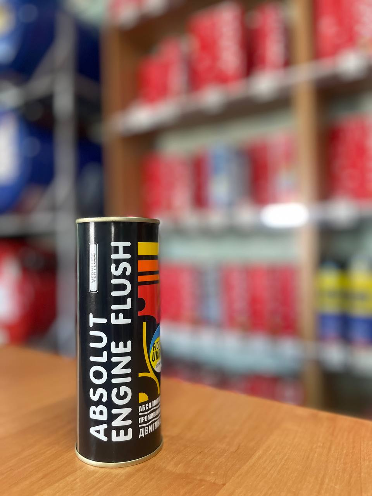

Об’єм: 250 мл
Промивка оливної системи двигуна. Інтенсивно й безпечно очищає оливну систему двигуна від усіх забруднень, зокрема важковидалюваних лакових (жовтого кольору). Диспергує розчинені забруднення, утримує їх у завислому стані й виводить разом із відпрацьованою оливою. Рекомендована до застосування під час кожної заміни оливи або в разі переходу на інший її сорт.
Якщо ви хочете дізнатись про наявність товару, отримати консультацію або поставити будь-які питання щодо продукції XADO — ми завжди готові допомогти.
Телефон для зв’язку: +38 (050) 585-07-26
Ми допоможемо обрати саме те, що потрібно вашому автомобілю.
Звертайтеся, ми цінуємо кожного клієнта!